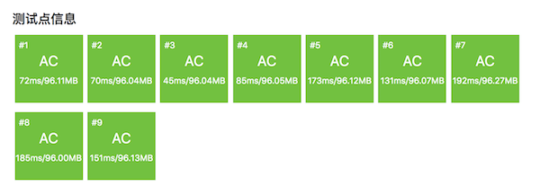

3.1.4. 回文质数（USACO1.5；洛谷P1217）¶
题目描述
因为151既是一个回文数又是一个质数，所以称151是一个回文质数。
写一个程序来找出范围在 \([a,b],(5\le a\lt b\le 100,000,000)\) 之间的所有回文质数。
输入格式
第1行：二个整数，a和b。
输出格式
按从小到大的顺序输出一个回文质数的列表，一行一个。
输入输出样例
输入：
5 500
输出：
5
7
11
101
131
151
181
191
313
353
373
383
3.1.4.1. 朴素的算法¶
遇到问题，一般总是先从最朴素的思路出发考虑如何解决。这个题最朴素的思路就是从最小值 \(a\) 到最大值 \(b\) 挨个儿把所有整数循环一遍，然后对每一个数判断它是否既是质数又是回文数。非常简单直接粗暴，这种思路一般叫做枚举法或蛮力法。
由于偶数不可能是质数，个位数为5的奇数除5以外也不可能是质数，所以我们只需要暴力搜索所有奇数，并且抛弃除了5以外那些个位数为5的数，这样可以节省一大半时间。同时因为偶数已经全部抛弃，所以在判断一个数是不是质数时，可以从3开始找它的因数，而不是从2开始，这样又可以稍微节省一丢丢的时间。下面我们把代码写出来，试着运行一下看看效果如何。
#include <cstdio>
bool is_prime(int n);
bool is_palindrome(int n);
int main()
{
int a, b;
scanf("%d %d", &a, &b);
for (int i = a; i <= b; i += 2) {
if (i > 5 && i % 10 == 5) continue;
if (is_prime(i) && is_palindrome(i))
printf("%d\n", i);
}
return 0;
}
bool is_prime(int n)
{
bool prime = true;
for (int f = 3; f * f <= n && (prime = n % f); f++);
return prime;
}
bool is_palindrome(int n)
{
int ori = n, rev = n % 10;
while (n /= 10) rev = rev * 10 + n % 10;
return ori == rev;
}
注解
这个蛮力算法的程序其实没有什么可多解释的，非常简单直接。
唯一值得一看的地方是函数 is_prime() 用了一点小技巧来使得代码更简洁。通常中规中矩的质数判断会在循环体中检查是否发现因数，一旦发现一个因数就中断循环并返回 false，否则直到循环结束后返回 true。这里我们换了一种写法，先预设一个逻辑型变量 prime 作为是否质数的标志，初始化它为 true。然后在寻找因数时，我们利用C++语言把0视为 false、非0视为 true 的特点，用余数去直接赋值它。如果余数为0，说明找到了一个因数，这会使 prime 被赋值为 false；如果余数不为0则恰好相反。然后我们把这个赋值表达式直接用在循环条件里，使得一旦这个标志成为 false，循环就会中止。如果一直找不到因数，那么它就会始终保持为 true。于是循环体里面就不需要做任何事情了，该做的事情在判断循环条件时就一并做完了，空循环足矣。最终我们只要返回这个 prime 的值就可以了。
如果你看到这里还不明白这个小技巧的运行原理，我建议找几个小一点的奇数在纸面上自己模拟运行一下看看，把这个小技巧搞懂。如果你对这种小技巧不感兴趣，你也完全可以忽视它，就用中规中矩的方式写程序。这并没有什么实质性的区别。
如果测量一下这个程序的运行时间，我们发现当数据范围在5到1,000,000的时候，它大概要运行250ms的样子，在可以接受的秒答范围内。当数据范围扩大到5到3,000,000时，它大概率就要运行1秒以上才能结束了。当数据范围扩大到5到10,000,000时它大概要运行6400ms左右，远远超出了算法竞赛所要求的一秒限制。而当数据范围扩大到本题所给出的5到100,000,000时它竟然运行了近170秒！
蛮力算法有三大特点：思路简单、程序不易错、运行常超时。而常超时这个大缺点彻底掩盖了简单和不易错两个优点，使得在算法编程中往往不能采用这种方法。这也促使我们要不断设法改进思路，设计出更加精妙的高性能算法。但是那样的算法也一定更加复杂和难懂。
3.1.4.2. 从质数中找回文数¶
朴素算法的问题在于毫无差别地枚举了所有可能的数，并且对每一个数都进行质数判断和回文数判断。所以我们能够想到的一种改进是用埃氏筛子筛出从 \(a\) 到 \(b\) 之间的所有质数。每筛出一个质数，就判断它是不是回文数。在筛子正常筛选结束后，别忘了继续向后遍历完范围内的所有质数。
#include <cstdio>
#include <cstring>
const int MAXN = 1e8;
bool primes[MAXN+10];
bool is_palindrome(int n);
int main()
{
int a, b;
scanf("%d %d", &a, &b);
memset(primes, 1, sizeof(primes));
primes[0] = primes[1] = false;
int p = 2;
while (p * p <= b) {
for (int i = p * p; i <= b; i += p)
primes[i] = false;
if (p >= a && is_palindrome(p))
printf("%d\n", p);
while (!primes[++p]);
}
while (p <= b) {
if (p >= a && is_palindrome(p))
printf("%d\n", p);
while (!primes[++p]);
}
return 0;
}
bool is_palindrome(int n)
{
int ori = n, rev = n % 10;
while (n /= 10) rev = rev * 10 + n % 10;
return ori == rev;
}
加上测量运行时间的功能后运行这个程序可以看到速度有了明显提升，但是当数据范围扩大到接近一亿时运行时间仍然超过了1秒。在洛谷网站实测，10个测试点中后5个TLE，耗时都在1.2秒左右。对每一个步骤进行计时分析后发现，问题出在埃筛进行质数筛选的初期，特别是筛除2的倍数和3的倍数时，由于数据规模太大，2的倍数和3的倍数过多，导致速度很慢。我们的算法已经接近成功了，但是还需要一点改进。
上一节曾经说过，偶数位的回文数除了11以外全部是合数。而108以内最大的奇数位回文质数通过打表可以知道是9989899。所以我们至少可以把数据的最大值限制在9989899封顶的范围内，这就比一亿小了10倍，值得一试。
#include <cstdio>
#include <cstring>
const int MAXN = 1e8;
bool primes[MAXN+10];
bool is_palindrome(int n);
int main()
{
int a, b;
scanf("%d %d", &a, &b);
b = b > 9989899 ? 9989899 : b;
memset(primes, 1, sizeof(primes));
primes[0] = primes[1] = false;
int p = 2;
while (p * p <= b) {
for (int i = p * p; i <= b; i += p)
primes[i] = false;
if (p >= a && is_palindrome(p))
printf("%d\n", p);
while (!primes[++p]);
}
while (p <= b) {
if (p >= a && is_palindrome(p))
printf("%d\n", p);
while (!primes[++p]);
}
return 0;
}
bool is_palindrome(int n)
{
int ori = n, rev = n % 10;
while (n /= 10) rev = rev * 10 + n % 10;
return ori == rev;
}
只需要加一句语句，然后在洛谷网站测试一下，结果全部测试点AC。从测试点的运行时间来看，当数据规模从107增长到108后埃筛的耗时增长幅度高达4至5倍。
那么有没有更加好的方法？答案是有的。
3.1.4.3. 从回文数中找质数¶
进一步考量回文质数除11以外全部是奇数位的性质，容易发现从5到100的范围内其实只有3个回文质数：5、7、11。如果我们事先把这三个数特判掉，那么剩下的回文质数可选范围就只能是三位数、五位数和七位数了。三位的回文数从101到999，最高两位从10到99一共有90种可能，最低位由最高位确定，故三位回文数一共有90个。类似的，五位回文数由最高三位确定，一共有900个；七位回文数由最高四位确定，一共9000个。总共只有9990个候选回文数。再加上质数的个位数不能是偶数或5，所以最高位只能选用1、3、7、9这四个数，这让候选回文数的数量锐减到只有4440个，比起从5到9989899之间的质数数量（663959个）要少很多。
所以我们只要设法构造出这4440个候选回文数，然后判断它们是否为质数即可，这是一个非常高效的算法。构造奇数位数的回文数并不难，使用一个三层循环就可以了。外循环依次生成最高位（1、3、7、9），第二层循环依次生成最高位和中间位之间的数，最内层循环从0到9循环生成整个回文数的中间位，并在最内层循环体中完成回文数的构造。
用 int f 表示最高位，用 int m 表示最高位和中间位之间的部分，用 int l 表示中间位的数。另外用一个宽度变量 int size 来表示当前要生成几位的回文数。
三位回文数，最高位和中间位之间没有数位，
m没得选择，只能为0，用size = 1来表示要构造三位回文数。五位回文数，最高位和中间位之间有一个数位，
m有从0到9一共十种选择，用size = 10来表示要构造五位回文数。七位回文数，最高位和中间位之间有两个数位，
m有从0到99一共一百种选择，用size = 100来表示要构造七位回文数。
当给定一组 f, m, l, size 时，我们就可以用下面这个算法来构造出一个回文数，其中 Reverse 是整数反转。
算法
\(\text{Palindrome}(f, m, l, size):\)
\(p\leftarrow f\times size + m\)
\(r\leftarrow \text{Reverse}(p)\)
\(p\leftarrow (p\times10+l)\times size\times10+r\)
\(\text{return }p\)
让这些变量按要求循环起来就可以构造候选回文数了，在程序中我们先把下界 \(a\) 和上界 \(b\) 限制在101和9989899之间，然后依次去构造三位、五位和七位的候选回文数进行判断。如果生成出来的数小于下界，就直接跳过进入下一次构造，如果大于上界就结束整个构造过程。
#include <cstdio>
bool is_prime(int a);
int reverse(int n);
int palindromes(int size, int min, int max);
int main()
{
int a, b;
scanf("%d %d", &a, &b);
if (a <= 5 && b >= 5)
printf("5\n");
if (a <= 7 && b >= 7)
printf("7\n");
if (a <= 11 && b >= 11)
printf("11\n");
a = a > 101 ? a : 101;
b = b > 9989899 ? 9989899 : b;
for (int size = 1; size <= 100; size *= 10)
palindromes(size, a, b);
return 0;
}
bool is_prime(int a)
{
bool prime = true;
for (int i = 3; i * i <= a && (prime = a % i); i++);
return prime;
}
int reverse(int n)
{
int r = n % 10;
while (n /= 10) r = r * 10 + n % 10;
return r;
}
int palindromes(int size, int min, int max)
{
int p, r;
for (int f = 1; f <= 9; f += 2) {
if (f == 5) continue;
for (int m = 0; m < size; m++) {
for (int l = 0; l < 10; l++) {
p = f * size + m;
r = reverse(p);
p = (p * 10 + l) * size * 10 + r;
if (p < min) continue;
if (p > max) return 0;
if (is_prime(p))
printf("%d\n", p);
}
}
}
return 0;
}
为什么不从下界值开始构造候选回文数，而是要从101开始然后抛弃那些小于下界值的数？这样不是会浪费时间吗？确实会浪费一点时间，但是不影响时间复杂度的等级。反过来如果那样做的话需要写上一大堆的 if ... else ... 来控制循环起点，编程的复杂度增加不少，容易引入错误，但实际上速度并不会得到多少改进，这种得不偿失的事情我们不做。提交到洛谷网站OJ后得到的结果显示，速度非常之快。
思考
到此为止，这个算法编程题可以完美地结束了。但是还有别的可行的方法吗？当然有，比如朴素算法经过一定的改进也可以做到AC，只要我们限制暴搜的范围。首先把5、7和11特判掉，就可以把暴搜的范围缩小到101到9989899之间，然后我们在暴搜时排除2的倍数，还不行就再排除3的倍数、5的倍数……最后我们还可以设法跳过偶数位的数，总之在不断优化之后朴素算法也总有一天能达到1秒以内的速度。另外我们还可以改进第二种算法，例如改用欧拉线性筛。如果有兴趣建议自己动手试一试。